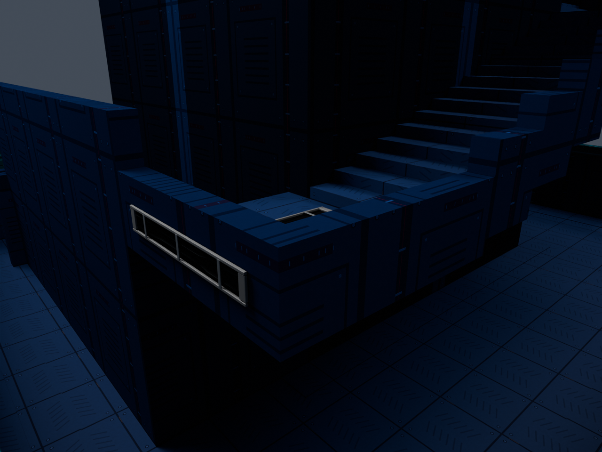
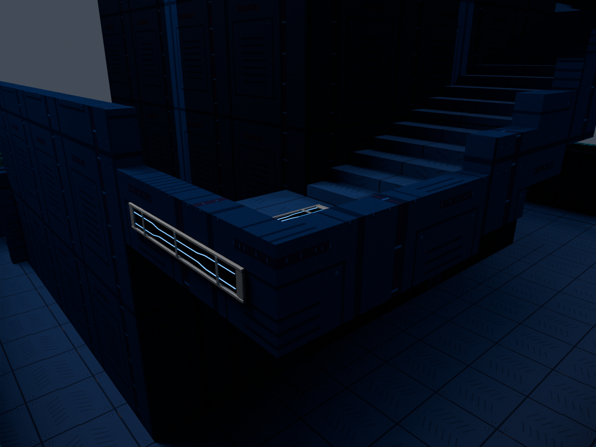
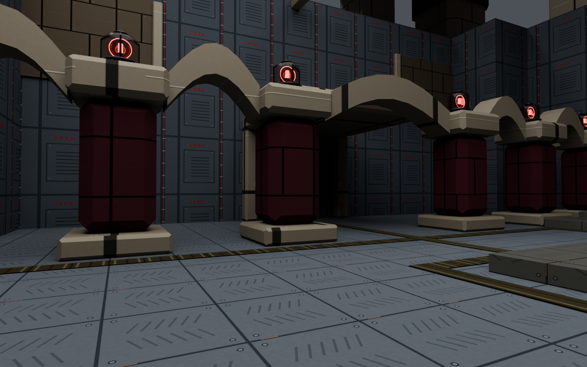
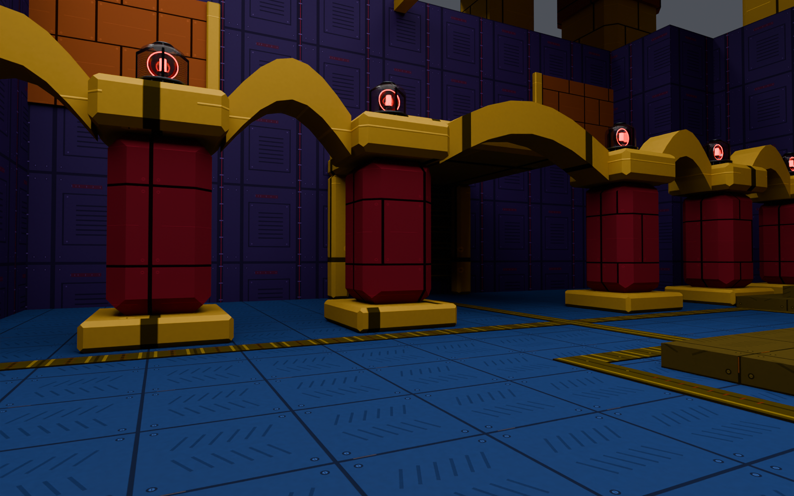
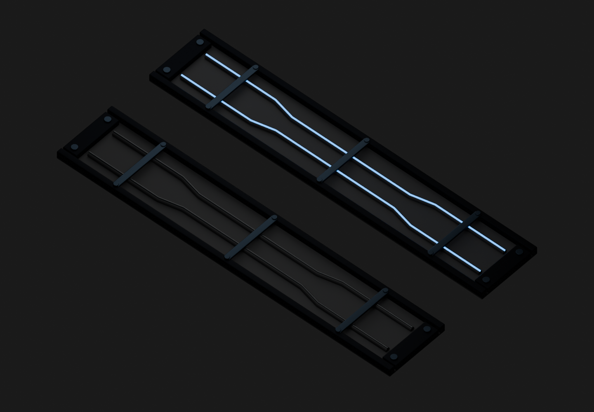

TOWER OF DOOM II ? BLENDER MCP MATERIAL REVIEW
The whole tower comes on.
Cobalt floors, violet service panels, warm gold framing and distinct jewel colors restore the earlier crown's identity. The detailed tread, vents, seams, fasteners and wear remain.
Full native build verified September 27 at 12:01 PM. Whole-tower materials, powered wire models and deployed files passed their checks. Ready for your playtest; these are matched Blender previews, not game screenshots.
Teleporter screenshot follow-up: surface correction ready for the same build.
Necromancer staff detail and casting review. Tier 2 and Tier 3 close-ups, first-person poses and motion samples; native build status is recorded on that page.
New tower pass: crown materials throughout the map, stair lighting and a brighter sky. Combined native build passed; user playtest pending.
Broken descent: 24 fixed one-way drops mixed with the remaining stair doors. Actual map geometry and floor-by-floor layout.
Top-floor transit bay: floor 30/20/10 links upstairs, plus the bottom-to-crown return. Floor 40 now holds the arena chamber. Room, routes and actual-geometry previews.
Power across both towers.
The crown's detailed material family covers all structural floors and walls, including the previously missed trial-hall liners. There are now 1,109 recessed wire details throughout the map. They stay dark until power comes on, then remain lit after the crown alarm ends.
Actual lower-tower geometry and native wire meshes. Both views use the same neutral review lighting; these images demonstrate the material change, not BO3's baked lighting or exposure.
Power offDark conductors in machined channels.
Power onCyan wiring on floor panels and both wall faces.
Coverage, build status and diagnostics ? Editable tower preview
Cobalt treadViolet panelsWarm goldRubyEmeraldFine cyan wires
The same detail, stronger color.
Before ? muted migration paletteCurrent detailed kit with its previous material tints.
Restored ? cobalt, violet and goldIdentical geometry, camera, lighting and exposure.
A little life inside the panels.

Power off below left ? power on above rightTwo fine conductors, cable insulation, retaining clips and small connectors.The shallow wire channels sit within a dark rim, just above existing floor panels and wall seams. They keep a low profile and do not change collision or navigation.
Every one of the 50 main-tower floors and 70 spire floors now has powered floor and wall channels. The base, breathers, trial halls, crown, transit room, summit and arena also have wiring. Only the fine cyan conductors glow; the detailed colored materials remain visible around them.
The wires follow the actual power flag and stay lit after the crown alarm stops. Their current model state also reaches joining players.
Open the wire-channel Blender source ? Open the restored crown Blender scene
The tower keeps its district colors and now shares these authored tread and panel textures. The linked tower pass adds route lighting across both climbs. Powered wiring extends through both towers and their connecting rooms.